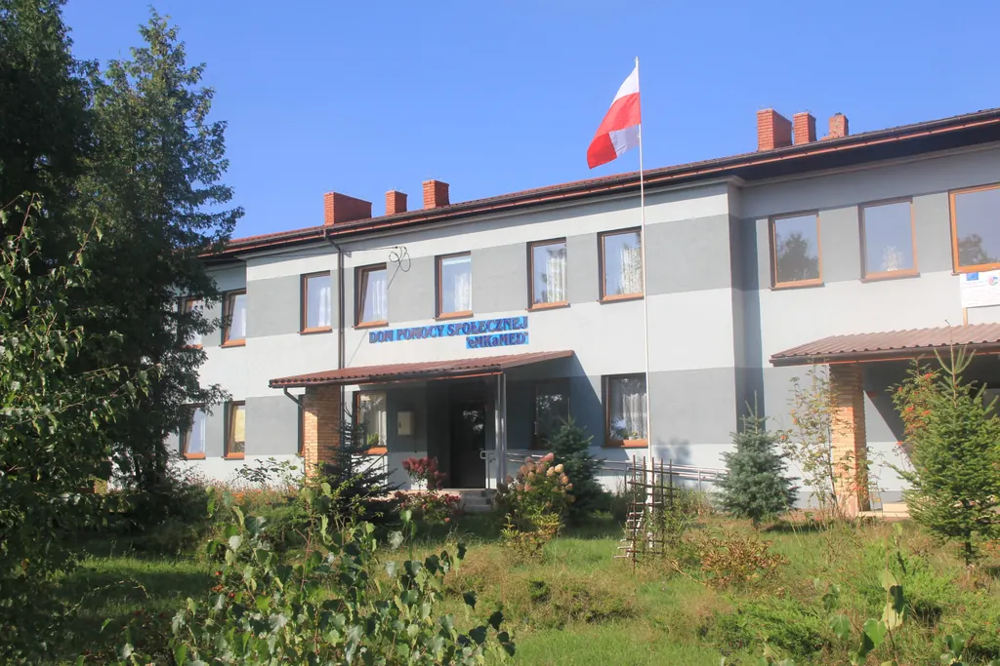

Przyjęcie do Domu
Informacje dla rodzin: jak wygląda przyjęcie, jakie są zasady umowy i czego można się spodziewać w pierwszych dniach.
Cztery kroki do zamieszkania
Wiemy, że to trudna decyzja. Dlatego ograniczyliśmy formalności do minimum i na każdym etapie pomagamy.
- 1
Telefon lub wiadomość
Zadzwońcie Państwo pod numer 534 647 444 albo napiszcie na mka_1@wp.pl. Porozmawiamy o potrzebach bliskiej osoby, wolnych miejscach i warunkach pobytu.
- 2
Odwiedziny w Domu
Zapraszamy do Żebr-Laskowca, żeby obejrzeć pokoje i porozmawiać z nami osobiście. Wcześniej prosimy o telefon.
- 3
Dokumenty i umowa
Służymy wszystkimi potrzebnymi dokumentami. Są krótkie i zrozumiałe. Umowę podpisujemy z Mieszkańcem w obecności Rodziny.
- 4
Przyjazd i pierwsze dni
Pracownik socjalny wita nowego Mieszkańca, zapoznaje z regulaminem Domu, załatwia sprawy urzędowe i pomaga przyzwyczaić się do nowego miejsca.
Najczęstsze pytania rodzin
Jak długo czeka się na przyjęcie?
Przyjmujemy możliwie szybko, bez wielomiesięcznego oczekiwania na decyzję. O wolnych miejscach najlepiej zapytać telefonicznie: 534 647 444.
Czy można wcześniej obejrzeć Dom?
Tak. Zapraszamy do odwiedzin, żeby zobaczyć pokoje, poznać personel i porozmawiać na miejscu. Prosimy wcześniej zadzwonić i umówić się na dogodny termin.
Jakie dokumenty są potrzebne?
Wymaganych formalności jest niewiele. Wszystkie potrzebne druki przygotowujemy my, a pracownik socjalny pomaga je wypełnić. Listę dokumentów podajemy przy pierwszej rozmowie.
Na jakich zasadach jest umowa?
Umowa jest jasna i przejrzysta. Mieszkaniec może zdecydować o pozostaniu albo wyprowadzce z miesięcznym okresem wypowiedzenia, bez kar umownych i dodatkowych kosztów. Umowę podpisujemy z Mieszkańcem w obecności Rodziny.
Ile kosztuje pobyt?
Aktualny koszt pobytu i warunki podamy telefonicznie lub mailowo. Zależy nam na przystępnej cenie i przejrzystej umowie, bez ukrytych opłat.
Czy rodzina może odwiedzać Mieszkańca?
Tak, zależy nam na kontakcie Mieszkańców z bliskimi. Dom jest otwarty codziennie w godzinach 8:00-18:00. Pracownik socjalny pomaga też utrzymać kontakt z rodziną na co dzień.
Dlaczego rodziny wybierają nasz Dom
Chcemy, żeby wybór był spokojny i pewny. Naszym bliskim ma niczego nie brakować, a pomoc i wsparcie mają być na miejscu.
- całodobowa opieka i opieka pielęgniarska
- pokoje 1-, 2- i 3-osobowe z łazienkami
- domowe wyżywienie z uwzględnieniem diet
- budynek bez barier, z windą
- rehabilitacja według wskazań lekarza
- przystępna cena i uczciwa umowa

Szukają Państwo miejsca dla bliskiej osoby?
Najprościej zadzwonić. Opowiemy o Domu, wolnych miejscach i o tym, jak wygląda przyjęcie. Można też przyjechać i obejrzeć Dom na miejscu.